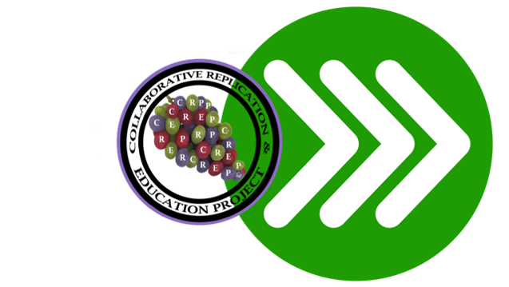

The Accelerated CREP
The Collaborative Replication and Education Project (CREP) and the Psychological Science Accelerator are partnering on a project for the 2018-2019 replication season. The mission of the Accelerator is to accelerate the accumulation of reliable and generalizeable evidence in psychological science. The mission of the CREP is to improve undergraduate training through crowdsourced replication. We think these two missions can be pursued in tandem.  The CREP (http://osf.io/wfc6u) is a crowdsourced replication project designed for undergraduate researchers. We invite students to replicate a study from a pre-selected list, chosen because they are both highly cited and feasible for undergraduates to complete. Contributors receive CREP approval by demonstrating research transparency at both pre and post data collection stages in order to maximize the value of their replication data for future meta-analyses. Once there are enough samples to draw meaningful conclusions from the data, all contributors are encouraged to collaborate on a research paper. Since launching in 2013, over 350 students have started over 100 replication projects. We have one manuscript in press (Leighton et al. 2018), two more nearing completion (Wagge et al.; Ghelfi et al.), and several more that still need more data, listed here. The Psychological Science Accelerator is a more recent crowdsourced project, and though it is similar to the CREP in many ways, it is also more advanced in development and scope (Moshontz et al., 2018). It is a network of over 230 laboratories that democratically select studies and then conduct them on a global scale. The major difference is that the CREP is specifically focused on involving undergraduates in the educational component of replication science, while the Accelerator is primarily focused on accelerating psychological science more generally, though educators can certainly work with undergraduates on all Accelerator projects. The CREP and Accelerator have decided to coordinate a pilot test of an “Accelerated CREP” study. This pilot will evaluate the feasibility of the Accelerator formally adding an undergraduate education component, via the CREP, on a more regular basis. It is also an opportunity for the CREP to extend their contributor pool beyond their historical audience, and complete data collection for one CREP study much more quickly than normal. Among the Accelerator’s over 230 active laboratories, we imagine that a subset of PIs would like to either implement the CREP as part of their research methods courses or work with undergraduate researchers on the Accelerated CREP who would benefit from taking “ownership” of a project and contributing to a large-scale collaboration outside of the typical Accelerator workflow. For this partnership, Accelerator members and one or more undergraduate researchers they supervise, are invited and encouraged to work through the CREP process for a single study between August 1, 2018 and May 30, 2019. Where possible, we recommend that contributing teams assign a student as the contact person to interact with the CREP Review team, in order for them to experience all aspects of the research experience. Here we give an overview of the full process for the first “Accelerated CREP” study, which differs in a few notable ways from the standard operating procedures of the Accelerator and CREP. Phase 1 (submission and evaluation, complete). The CREP team conducted their normal study selection process for the 2018/2019 academic year. Each year, the CREP team selects one to three new studies to add to the list of available studies. They identify the top three or four cited articles in the top journal in nine sub-disciplines, then code those studies for feasibility and potential student interest. This year they selected one new study, Turri, Buckwalter, & Blou (2015), “Knowledge and Luck”, Study 1 (https://osf.io/n5b3w/) with a target N = 100 for each local site. Phase 2 (Preparation). The CREP invites Direct (or close) replications from contributors. As such, the protocol should match that of the published article. For advanced students, the CREP invites Direct+Plus replications which involve the addition of one or more additional independent or dependent variables that are collected after (or independently) of the original study. The Turri et al. study 1 is exciting to replicate because the methods are all available in the publication, and they can be administered via computer. Further, there may be interesting moderator variables that could be tested across multiple labs. The CREP asks contributors to create and edit an OSF page (https://osf.io/srh4k/) and provide their materials, ethics approval, and a video of their procedure. For the Accelerated CREP, we hope to recruit undergraduates from 30 or more locations to join the project. Phase 3 (Implementation). CREP contributors submit their project page for review by the CREP team twice, once before and once after data collection. The pre-data review verifies that the contributor is meeting CREP standards for ethics, materials, and procedure. For the post-data review, the CREP team reviews the presentation of the data and the results to verify the data are useable in the meta-analysis. Review teams including two faculty and a student administrative advisor, David Redman, will be led by one of the CREP’s experienced Executive Reviewers, Dr. Jordan Wagge. Faculty on contributing teams will be invited to serve as reviewers on other CREP contributor’s projects in order to ensure high quality replications. Phase 4 (dissemination). Because the CREP is decentralized, the local data sets are posted publicly in order to go through the post-data review. Contributors are encouraged to present their findings at conferences, but the data are collated for the drafting and submitting of a manuscript reporting the combined findings, because no single replication provides definitive results. In contrast to normal CREP procedure, we invite potential authors to indicate their interest in authorship at the beginning rather than the end of the project. Braedon Hall will act as 1st author and the coordinating author for an associated preregistered report of the findings under the guidance of graduate advisor, and lead executive reviewer, Jordan Wagge. The organizers of this partnership consider this a tentative relationship which we will re-evaluate for possible future implementation. In the meantime, come along and join us as we Accelerate a CREP study. Jon Grahe (CREP Project Leader & Pacific Lutheran University) Christopher R. Chartier (Accelerator Director & Ashland University)
Sign Up Here!
Additional pronunciation guidance and derivation from Jon Grahe:
“Why CREP rhymes with Grapes”
the grape metaphor for replication science
When considering a bunch of grapes, all from the same DNA, they represent a wonderful metaphor for replication science. Grapes from the same bunch, or different bunches from the same vine, all share DNA, but they are rarely, if ever, identical. They differ from each other in a number of factors much like replications differ from each other, and from an original study. Because of growing conditions, contextual differences; grapes can differ in size, color, and ripeness. All the same DNA, but still different.
In comparison to grapes, replications also differ in size, color, and ripeness. Size is the easiest metaphor to recognize, researchers might have more access or resources to collect data from more participants. Color in research reflects all the diversity in application of a replication, not just diversity of participants and experimenters, but also the time of day, the decorations of the lab, the educational culture on campus, and all the other variables that make research laboratories unique. Finally, ripeness reflects age and experience; certainly applicable in research as replications are conducted by experimenters exploring the task for the first time and by professionals who have completed more studies than they can remember.
And of course, no one can stop at just one grape, and no one should stop at just one replication.